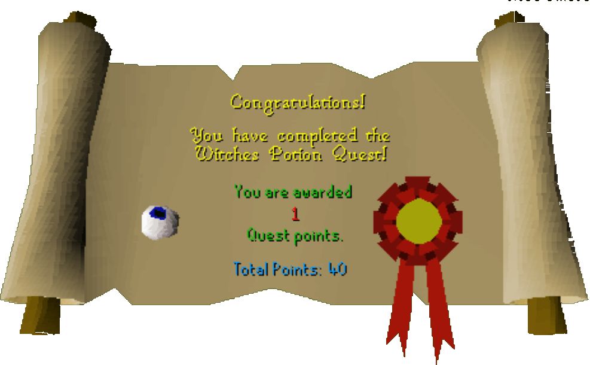

Witch's Potion
Description: Become one with your darker side. Tap into your hidden depths of magical potential by making a potion with the help of Hetty the Rimmington witch.Difficulty: Novice
Length: Short
Items & Skills Needed:
Reward: 1 Quest point, 325 Magic XP
Instructions:
Talk to the witch, Hetty, and she will tell you about getting the ingredients for the cauldron. You will need four items: an onion, burnt meat, an eye of newt, and a rat's tail.
Head to the Magic Shop in Port Sarim, Betty's Magic Emporium, and buy one eye of newt for 3gp.
Head south to the Food store and buy raw beef for 1gp. Buy one more if you think you may accidentally eat it. Alternatively, you may go east of the village and kill some big rats to obtain some meat.
Head west to the onion farm next to Melzar's Maze and grab an onion. Return to the village.
Find a small rat somewhere in the village and kill it for a Rat's Tail. (You must have started the quest to receive the tail)
Go to the house north of Hetty's. Use the meat on the range. If you have cooked it successfully, right click and use the cooked meat on the range again. You will get a burnt meat.
After getting the ingredients, return to Hetty's house and talk to her. She will tell you the cauldron is done and ask you to drink it. Click on the cauldron to drink it, and the quest is finished.
Congratulations, Quest Complete!

This quest guide was written on RuneHQ by Henry-X. Thanks to Weezy, Corruptus, and Fran 2004 for corrections.
This quest guide was entered into the database on Sat, Feb 07, 2004, at 12:00:31 PM by Chownuggs and was last updated on Sun, Sep 21, 2025, at 07:44:28 PM by Halogod35.